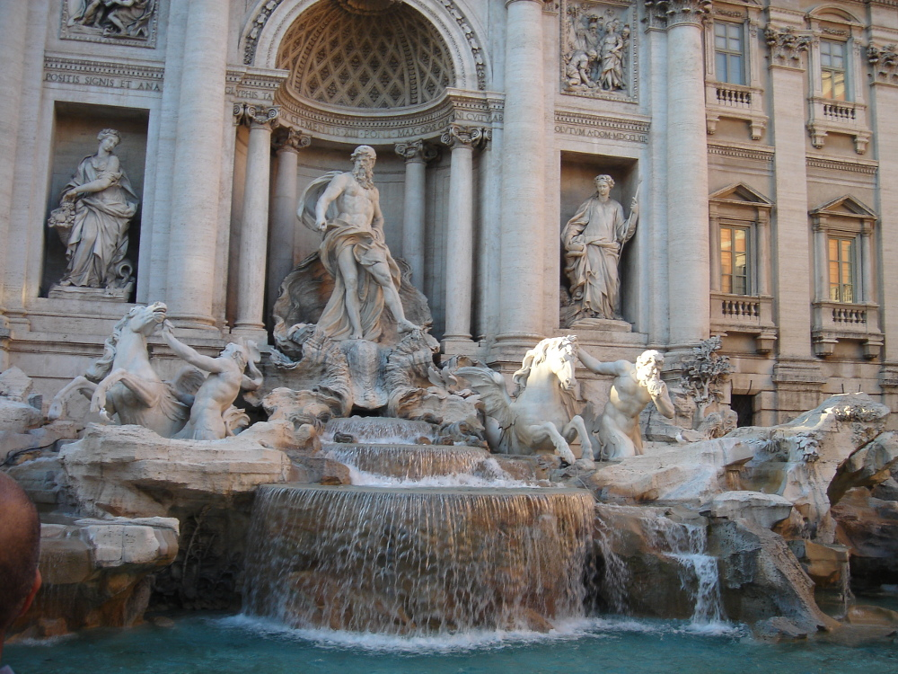

Obra del arquitecto Nicola Salvi, su construcción comenzó en 1732. Este no pudo verla terminada, ya que murió once años antes de su finalización (1762).
Su nombre hace referencia a la confluencia de las tres calles que desembocan en la plaza o a la triple salida del agua de la fuente situada originalmente en este mismo enclave.